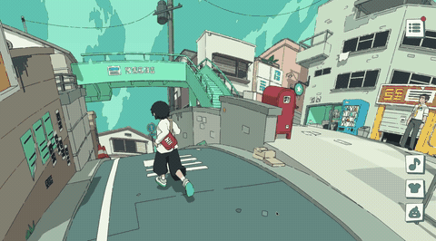

本周科技要闻
6.14 — 6.20
5 条要闻 · 5 分钟读完 ☕
SpaceX 豪掷600亿买下 Cursor、小红书终于要 IPO、Fable 5 被禁后智谱火速开源 GLM-5.2、一个送信小游戏让全网上头、Redis 之父和 AI 研究员因为"蒸馏"吵起来了——信息密度拉满的一周 👇
1SpaceX 600亿美元收购 Cursor：IPO 后第一刀砍向 AI 编程
6月16日，SpaceX 官宣以 600亿美元 全股票交易收购 AI 编程工具 Cursor 的母公司 Anysphere——这是 AI 开发者工具领域有史以来最大的一笔交易。
Cursor 的增长曲线堪称疯狂：ARR 从2025年初的 1亿美元飙升到 40亿美元，付费用户突破100万，超过一半的财富500强都是它的客户。
Musk 年初已将 xAI 并入 SpaceX，这次拿下 Cursor，等于补齐了"火箭 + AI 基础模型 + AI 编程工具"的完整拼图。合并预计 Q3 完成——到时候用 Cursor 写代码，背后跑的可能就是 Grok 了。
💡 冷知识
SpaceX 的 IPO 规模让它一举超过亚马逊市值，成为全球前五大上市公司。这600亿的收购对它来说，不过是 IPO 后的"零花钱"。
2小红书终于要上市了：6月底秘密递表港交所
传了好几年的小红书 IPO，这次看起来是真的了。据彭博报道，小红书已聘请高盛和中金公司，准备在6月底前向港交所秘密递交 IPO 申请。
私募二级市场最新估值达 500亿美元（约3900亿港元），较2025年年中的310亿美元又涨了一截。2024年 Q1 营收超10亿美元、净利润2亿美元——曾经被质疑"不赚钱"的社区平台，算是彻底翻身了。
小红书由毛文超和瞿芳2013年创立，从海淘攻略起家，如今是中国最有影响力的生活方式社交平台之一，背后站着腾讯、阿里等一众明星股东。
📊 今年港股 IPO 市场回暖，截至目前已筹集约200亿美元，预计全年突破430亿美元创六年新高。小红书如成功上市，大概率成为年度最受关注 IPO。
3Fable 5 被禁次日，智谱发布 GLM-5.2 并完全开源
这是本周最戏剧性的一幕。6月9日 Anthropic 发布旗舰模型 Fable 5，三天后白宫紧急出口管制——理由是发现越狱漏洞可解锁底层 Mythos 5 的"危险网络安全能力"。Anthropic 接到通知后仅 90分钟，全球下线。
第二天，智谱发布 GLM-5.2，MIT 协议完全开源，支持 100万 token 上下文。智谱公开喊话——"前沿智能属于每一个人"，官方测评宣称编码能力对标 Claude Opus 4.8，开源 SOTA。智谱股价当日飙涨 33%。
百余名网络安全专家联名公开信称禁令"伤害防御者"。当美国限制自家最强 AI 出口时，是否反而在加速对手的崛起？
说回 GLM-5.2 本身——发布当天可以说是"一票难求"，API 排队、内测名额秒光，开源社区一片沸腾。但官方跑分和实际体验往往是两回事，有用过的朋友欢迎在评论区聊聊真实效果如何——毕竟，跑分再高，不如手感好。
💡 Tips
Fable 5 被禁后仅3天，GLM-5.2 就宣布开源——时间差太短，说明智谱的发布计划早已就绪。但选择在这个节点高调官宣，显然是一次精准的舆论操作。
4浏览器游戏 Messenger 爆红：免费 WebGL 小星球送信
在一堆硬核科技新闻里，这条清新得像一股风。Messenger 是一款完全免费的浏览器 WebGL 游戏，由开发者 Vicente Lucendo 和 Michael Sungaila 制作。你是一个小星球上的邮递员，骑着车给居民送信送包裹。
画风是《塞尔达：风之杖》式的卡通渲染，配上治愈的音乐和慢节奏探索，整个体验非常"反卷"。游戏2025年9月就上线了，但6月15日一条推文引爆社媒，曝光量达到 数百万级别。连《尼尔：机械纪元》制作人横尾太郎和《幽灵线：东京》中村育美都公开点赞。
最酷的是多人机制：你能在同一个小星球上看到其他正在玩的真实玩家，互相用 emoji 打招呼——有点像《风之旅人》那种无声的温暖。
无需安装，手机浏览器就能玩 👉 messenger.abeto.co

🎮 注意：GIF 仅展示画面风格，实际游戏体验远比截图丝滑——毕竟人家是 WebGL 原生渲染。
5Redis 之父 vs AI 研究员：中国大模型到底有没有"蒸馏"？
本周一场关于 AI 模型"蒸馏"的争论在技术圈引发热议，参与者的分量让这场讨论格外值得关注。
正方：antirez（Salvatore Sanfilippo）——Redis 的创造者，程序员圈子里的传奇人物。他发推表示：
"中国模型之所以强，不是因为蒸馏了美国模型。通过 API 进行蒸馏是不可能的。谁要是跟你说能，那他不懂机器学习。"
反方：Nathan Lambert——Allen Institute for AI（Ai2）高级研究科学家、后训练（post-training）方向负责人，知名 AI 技术博客 Interconnects 作者。他曾在 HuggingFace 组建 RLHF 研究团队，博士毕业于 UC Berkeley，在 Meta AI 和 DeepMind 都有过研究经历——在 AI 训练方法论上，他可能是业内最有发言权的人之一。
Lambert 的回应非常直接："这不太对。" 他的核心论点有三层：
第一，"蒸馏"这个词本身就在制造混乱。实验室用"蒸馏"（distillation）这个通用后训练术语，来指代一个更具体的问题——越狱 API（jailbreaking the API）。这种措辞模糊让公众讨论一团糟。
第二，蒸馏确实有用。中国实验室通过越狱前沿模型的 API，提取出推理链（reasoning traces），用来引导自己模型在新领域的推理能力。这不是"标准使用"API，而是绕过安全限制获取本不该暴露的思维过程。
第三，也是最有意思的一点——前沿实验室其实很难完全封堵这种行为。推理模型天然"想要"输出推理链，要完全堵住会大幅削弱模型智能。换句话说，保护知识产权和保持产品竞争力之间存在根本性矛盾。他呼吁 Anthropic 等公司对此更加透明，而不是用含糊的"蒸馏攻击"把水搅浑。
💡 背景
今年4月美国科技政策办公室报告称中国实体在进行"工业规模"的前沿 AI 蒸馏。但正如 Lambert 所指出的——蒸馏本身是全行业标准做法，美国公司同样在蒸馏中国的开源模型。问题的本质不是"蒸馏"，而是"越狱"。
看完这五条，你已经追上本周科技圈的节奏啦 🎯
SpaceX · 小红书 · GLM-5.2 · Messenger · AI蒸馏